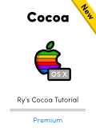

You’re reading Ry’s Objective-C Tutorial |
Classes
As in many other object-oriented programming language, Objective-C classes provide the blueprint for creating objects. First, you define a reusable set of properties and behaviors inside of a class. Then, you instantiate objects from that class to interact with those properties and behaviors.
Objective-C is similar to C++ in that it abstracts a class’s interface from its implementation. An interface declares the public properties and methods of a class, and the corresponding implementation defines the code that actually makes these properties and methods work. This is the same separation of concerns that we saw with functions.
In this module, we’ll explore the basic syntax for class interfaces, implementations, properties, and methods, as well as the canonical way to instantiate objects. We’ll also introduce some of Objective-C’s introspection and reflection capabilities.
Creating Classes
We’ll be working with a class called Car whose interface
resides in a file named Car.h (also called a “header”)
and whose implementation resides in Car.m. These are the standard
file extensions for Objective-C classes. The class’s header file is what
other classes use when they need to interact with it, and its implementation
file is used only by the compiler.
Xcode provides a convenient template for creating new classes. To create our
Car class, navigate to File > New > File… or
use the Cmd+N shortcut. For the template, choose Objective-C
class under the iOS > Cocoa Touch category. After that,
you’ll be presented with some configuration options:

Car classUse Car for the Class field and NSObject
for the Subclass of field. NSObject
is Objective-C’s top-level class from which almost all others inherit.
Clicking Next will prompt you to select a location for the file. Save
it in the top-level of the project directory. At the bottom of that dialog,
make sure that your project is checked in the Targets section. This is
what actually adds the class to the list of compiled sources.
After clicking Next, you should see new Car.h and
Car.m files in Xcode’s Project Navigator. If you
select the project name in the navigator, you’ll also find
Car.m in the Build Phases tab under the Compile
Sources section. Any files that you want the compiler to see must be in
this list (if you didn’t create your source files through Xcode, this is
where you can manually add them).
Interfaces
Car.h contains some template code, but let’s go ahead and
change it to the following. This declares a property called model
and a method called drive.
// Car.h#import<Foundation/Foundation.h>@interfaceCar:NSObject{// Protected instance variables (not recommended)}@property(copy)NSString*model;-(void)drive;@end
An interface is created with the @interface directive, after
which come the class and the superclass name, separated by a colon. Protected
variables can be defined inside of the curly braces, but most developers treat
instance variables as implementation details and prefer to store them in the
.m file instead of the interface.
The @property directive declares a public property, and the
(copy) attribute defines its memory management behavior. In this
case, the value assigned to model will be stored as a copy instead
of a direct pointer. The Properties module
discusses this in more detail. Next come the property’s data type and
name, just like a normal variable declaration.
The -(void)drive line declares a method called
drive that takes no parameters, and the (void)
portion defines its return type. The minus sign prepended to the method marks
it as an instance method (opposed to a class method).
Implementations
The first thing any class implementation needs to do is import its
corresponding interface. The @implementation directive is similar
to @interface, except you don’t need to include the super
class. Private instance variables can be stored between curly braces after the
class name:
// Car.m#import"Car.h"@implementationCar{// Private instance variablesdouble_odometer;}@synthesizemodel=_model;// Optional for Xcode 4.4+-(void)drive{NSLog(@"Driving a %@. Vrooooom!",self.model);}@end
@synthesize is a convenience directive that automatically
generates accessor methods for the property. By default, the getter is simply
the property name (model), and the setter is the capitalized name
with the set prefix (setModel). This is much easier
than manually creating accessors for every property. The _model
portion of the synthesize statement defines the private instance variable name
to use for the property.
As of Xcode 4.4, properties declared with @property will be
automatically synthesized, so it’s safe to omit the
@synthesize line if you’re ok with the default instance
variable naming conventions.
The drive implementation has the same signature as the
interface, but it’s followed by whatever code should be executed when the
method is called. Note how we accessed the value via self.model
instead of the _model instance variable. This is a best practice
step because it utilizes the property’s accessor methods. Typically, the only place
you’ll need to directly access instance variables is in init methods and the dealloc
method.
The self keyword refers to the instance calling the method
(like this in C++ and Java). In addition to accessing properties,
this can be used to call other methods defined on the same class (e.g.,
[self anotherMethod]). We’ll see many examples of this
throughout the tutorial.
Instantiation and Usage
Any files that need access to a class must import its header file
(Car.h)—they should never, ever try to access the
implementation file directly. That would defeat the goal of separating the
public API from its underlying implementation. So, to see our Car
class in action, change main.m to the following.
// main.m#import<Foundation/Foundation.h>#import"Car.h"intmain(intargc,constchar*argv[]){@autoreleasepool{Car*toyota=[[Caralloc]init];[toyotasetModel:@"Toyota Corolla"];NSLog(@"Created a %@",[toyotamodel]);toyota.model=@"Toyota Camry";NSLog(@"Changed the car to a %@",toyota.model);[toyotadrive];}return0;}
After the interface has been imported with the #import
directive, you can instantiate objects with the
alloc/init pattern shown above. As you can see,
instantiation is a two-step process: first you must allocate some memory for
the object by calling the alloc method, then you need to
initialize it so it’s ready to use. You should never use an uninitialized
object.
It’s worth repeating that all
objects must be stored as pointers. This is why we used Car
*toyota instead of Car toyota to declare the variable.
To call a method on an Objective-C object, you place the instance and the
method in square brackets, separated by a space. Arguments are passed after the
method name, preceded by a colon. So, if you’re coming from a C++, Java,
or Python background, the [toyota setModel:@"Toyota Corolla"]
call would translate to:
toyota.setModel("Toyota Corolla");
This square-bracket syntax can be unsettling for newcomers to the language, but rest assured, you’ll be more than comfortable with Objective-C’s method conventions after reading through the Methods module.
This example also shows you both ways to work with an object’s
properties. You can either use the synthesized model and
setModel accessor methods, or you can use the convenient
dot-syntax, which should be more familiar to developers who have been using
Simula-style languages.
Class Methods and Variables
The above snippets define instance-level properties and methods, but
it’s also possible to define class-level ones. These are commonly called
“static” methods/properties in other programming languages (not to
be confused with the static keyword).
Class method declarations look just like instance methods, except they are
prefixed with a plus sign instead of a minus sign. For example, let’s add
the following class-level method to Car.h:
// Car.h+(void)setDefaultModel:(NSString*)aModel;
Similarly, a class method implementation is also preceded by a plus
sign. While there is technically no such thing as a class-level variable in
Objective-C, you can emulate one by declaring a static variable
before defining the implementation:
// Car.m#import"Car.h"staticNSString*_defaultModel;@implementationCar{...+(void)setDefaultModel:(NSString*)aModel{_defaultModel=[aModelcopy];}@end
The [aModel copy] call creates a copy of the parameter instead
of assigning it directly. This is what’s going on under the hood when we
used the (copy) attribute on the model property.
Class methods use the same square-bracket syntax as instance methods, but
they must be called directly on the class, as shown below. They cannot
be called on an instance of that class ([toyota setDefaultModel:@"Model
T"] will throw an error).
// main.m[CarsetDefaultModel:@"Nissan Versa"];
“Constructor” Methods
There are no constructor methods in Objective-C. Instead, an object is
initialized by calling the init method
immediately after it’s allocated. This is why instantiation is always a
two-step process: allocate, then initialize. There is also a class-level
initialization method that will be discussed in a moment.
init is the default initialization method, but you can also
define your own versions to accept configuration parameters. There’s
nothing special about custom initialization methods—they’re just
normal instance methods, except the method name should always begin with
init. An exemplary “constructor” method is shown
below.
// Car.h-(id)initWithModel:(NSString*)aModel;
To implement this method, you should follow the canonical initialization
pattern shown in initWithModel: below. The super
keyword refers to the parent class, and again, the self keyword
refers to the instance calling the method. Go ahead and add the following
methods to Car.m.
// Car.m-(id)initWithModel:(NSString*)aModel{self=[superinit];if(self){// Any custom setup work goes here_model=[aModelcopy];_odometer=0;}returnself;}-(id)init{// Forward to the "designated" initialization methodreturn[selfinitWithModel:_defaultModel];}
Initialization methods should always return a reference to the object
itself, and if it cannot be initialized, it should return nil.
This is why we need to check if self exists before trying to use
it. There should typically only be one initialization method that needs to do
this, and the rest should forward calls to this designated
initializer. This eliminates boilerplate code when you have several
custom init methods.
Also notice how we directly assigned values to the _model and
_odometer instance variables in initWithModel:.
Remember that this is one of the only places you should do this—in the
rest of your methods you should be using self.model and
self.odometer.
Class-Level Initialization
The initialize method is the class-level equivalent of
init. It gives you a chance to set up the class before anyone uses
it. For example, we can use this to populate the _defaultModel
variable with a valid value, like so:
// Car.m+(void)initialize{if(self==[Carclass]){// Makes sure this isn't executed more than once_defaultModel=@"Nissan Versa";}}
The initialize class method is called once for every class
before the class is used. This includes all subclasses of Car,
which means that Car will get two initialize calls if
one of its subclasses didn’t re-implement it. As a result, it’s
good practice to use the self == [Car class]
conditional to ensure that the initialization code is only run once. Also note
that in class methods, the self keyword refers to the class
itself, not an instance.
Objective-C doesn’t force you to mark methods as overrides. Even
though init and initialize are both defined by its
superclass, NSObject, the compiler won’t complain when you
redefine them in Car.m.
The next iteration of main.m shows our custom initialization
methods in action. Before the first time the class is used, [Car
initialize] is called automatically, setting _defaultModel
to @"Nissan Versa". This can be seen in the first
NSLog(). You can also see the result of the custom initialization
method (initWithModel:) in the second log output.
// main.m#import<Foundation/Foundation.h>#import"Car.h"intmain(intargc,constchar*argv[]){@autoreleasepool{// Instantiating objectsCar*nissan=[[Caralloc]init];NSLog(@"Created a %@",[nissanmodel]);Car*chevy=[[Caralloc]initWithModel:@"Chevy Corvette"];NSLog(@"Created a %@, too.",chevy.model);}return0;}
Dynamic Typing
Classes themselves are represented as objects, which makes it possible to query their properties (introspection), or even change their behavior on-the-fly (reflection). These are very powerful dynamic typing capabilities, as they let you call methods and set properties on objects even when you don’t know what type of object they are.
The easiest way to get a class object is via the class
class-level method (apologies for the redundant terminology). For example,
[Car class] returns an object representing the Car
class. You can pass this object around to methods like
isMemberOfClass: and isKindOfClass: to get
information about other instances. A comprehensive example is included
below.
// main.m#import<Foundation/Foundation.h>#import"Car.h"intmain(intargc,constchar*argv[]){@autoreleasepool{Car*delorean=[[Caralloc]initWithModel:@"DeLorean"];// Get the class of an objectNSLog(@"%@ is an instance of the %@ class",[deloreanmodel],[deloreanclass]);// Check an object against a class and all subclassesif([deloreanisKindOfClass:[NSObjectclass]]){NSLog(@"%@ is an instance of NSObject or one ""of its subclasses",[deloreanmodel]);}else{NSLog(@"%@ is not an instance of NSObject or ""one of its subclasses",[deloreanmodel]);}// Check an object against a class, but not its subclassesif([deloreanisMemberOfClass:[NSObjectclass]]){NSLog(@"%@ is a instance of NSObject",[deloreanmodel]);}else{NSLog(@"%@ is not an instance of NSObject",[deloreanmodel]);}// Convert between strings and classesif(NSClassFromString(@"Car")==[Carclass]){NSLog(@"I can convert between strings and classes!");}}return0;}
The NSClassFromString() function is an alternative way to get
your hands on a class object. This is very flexible, as it lets you dynamically
request class objects at runtime; however, it’s also rather inefficient.
For this reason, you should opt for the class method whenever
possible.
If you’re interested in dynamic typing, be sure to check out Selectors and The id Type.
Summary
In this module, we learned how to create classes, instantiate objects, define initialization methods, and work with class-level methods and variables. We also took a brief look at dynamic typing.
The previous module
mentioned that Objective-C doesn’t support namespaces, which is why the
Cocoa functions require prefixes like NS, CA,
AV, etc to avoid naming collisions. This applies to classes, too.
The recommended convention is to use a three-letter prefix for your
application-specific classes (e.g., XYZCar).
While this is pretty much everything you need to know to start writing your
own classes, we did skim over some important details, so don’t worry if
you’re feeling not entirely comfortable with properties or methods. The
next module will begin filling in these holes with a closer look at the
@property directive and all of the attributes that affect its
behavior.
|  | Be sure to check out Ry’s Cocoa Tutorial. This brand new guide is a complete walkthrough of Mac App development, and it leverages all of the Objective-C skills that we just discussed. Learn more › |
Mailing List
Sign up for my low-volume mailing list to find out when new content is released. Next up is a comprehensive Swift tutorial planned for late January.
You’ll only receive emails when new tutorials are released, and your contact information will never be shared with third parties. Click here to unsubscribe.